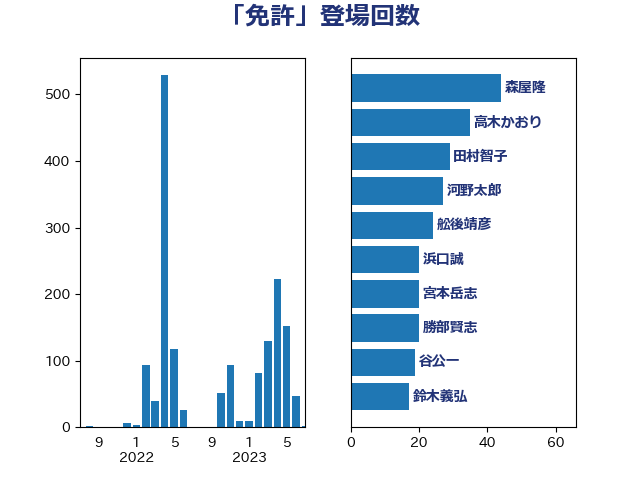

単語「免許」

| 森屋隆 | 立憲民主党 | 44 回 |
| 高木かおり | 日本維新の会 | 35 回 |
| 田村智子 | 日本共産党 | 29 回 |
| 河野太郎 | 自由民主党 | 27 回 |
| 舩後靖彦 | れいわ新選組 | 24 回 |
| 浜口誠 | 国民民主党 | 20 回 |
| 宮本岳志 | 日本共産党 | 20 回 |
| 勝部賢志 | 立憲民主党 | 20 回 |
| 谷公一 | 自由民主党 | 19 回 |
| 鈴木義弘 | 国民民主党 | 17 回 |
| 柳ヶ瀬裕文 | 日本維新の会 | 17 回 |
| 末松信介 | 自由民主党 | 17 回 |
| 吉良よし子 | 日本共産党 | 17 回 |
| 永岡桂子 | 自由民主党 | 16 回 |
| 山岸一生 | 立憲民主党 | 16 回 |
| 岸田文雄 | 自由民主党 | 15 回 |
| 吉川元 | 立憲民主党 | 15 回 |
| 斉藤鉄夫 | 公明党 | 14 回 |
| 小川淳也 | 立憲民主党 | 14 回 |
| 堤かなめ | 立憲民主党 | 14 回 |
| 勝目康 | 自由民主党 | 14 回 |
| 仁木博文 | 無所属 | 14 回 |
| 緒方林太郎 | 無所属 | 13 回 |
| 山本佐知子 | 自由民主党 | 13 回 |
| 塩川鉄也 | 日本共産党 | 12 回 |
| 阿部弘樹 | 日本維新の会 | 11 回 |
| 猪瀬直樹 | 日本維新の会 | 10 回 |
| 松本剛明 | 自由民主党 | 10 回 |
| 大島九州男 | れいわ新選組 | 10 回 |
| 高橋千鶴子 | 日本共産党 | 9 回 |
| 金子恭之 | 自由民主党 | 9 回 |
| 河西宏一 | 公明党 | 9 回 |
| 小熊慎司 | 立憲民主党 | 9 回 |
| 小寺裕雄 | 自由民主党 | 9 回 |
| 吉田久美子 | 公明党 | 9 回 |
| 加藤勝信 | 自由民主党 | 9 回 |
| 平林晃 | 公明党 | 8 回 |
| 大石あきこ | れいわ新選組 | 8 回 |
| 石井苗子 | 日本維新の会 | 7 回 |
| 掘井健智 | 日本維新の会 | 7 回 |
| 庄子賢一 | 公明党 | 7 回 |
| 川崎ひでと | 自由民主党 | 6 回 |
| 山本剛正 | 日本維新の会 | 6 回 |
| 堀場幸子 | 日本維新の会 | 6 回 |
| 佐々木さやか | 公明党 | 6 回 |
| 伊藤渉 | 公明党 | 6 回 |
| 伊藤孝恵 | 国民民主党 | 6 回 |
| 上田英俊 | 自由民主党 | 6 回 |
| 上田清司 | 国民民主党 | 6 回 |
| 高木真理 | 立憲民主党 | 5 回 |
| 西岡秀子 | 国民民主党 | 5 回 |
| 竹内真二 | 公明党 | 5 回 |
| 神津たけし | 立憲民主党 | 5 回 |
| 片山大介 | 日本維新の会 | 5 回 |
| 湯原俊二 | 立憲民主党 | 5 回 |
| 清水貴之 | 日本維新の会 | 5 回 |
| 池田佳隆 | 自由民主党 | 5 回 |
| 工藤彰三 | 自由民主党 | 5 回 |
| 大野泰正 | 自由民主党 | 5 回 |
| 吉井章 | 自由民主党 | 5 回 |
| 加藤鮎子 | 自由民主党 | 5 回 |
| 伊藤岳 | 日本共産党 | 5 回 |
| 三木圭恵 | 日本維新の会 | 5 回 |
| 芳賀道也 | 国民民主党 | 4 回 |
| 簗和生 | 自由民主党 | 4 回 |
| 篠原豪 | 立憲民主党 | 4 回 |
| 笠浩史 | 無所属 | 4 回 |
| 牧義夫 | 立憲民主党 | 4 回 |
| 滝波宏文 | 自由民主党 | 4 回 |
| 杉田水脈 | 自由民主党 | 4 回 |
| 岡本あき子 | 立憲民主党 | 4 回 |
| 山崎正恭 | 公明党 | 4 回 |
| 吉田とも代 | 日本維新の会 | 4 回 |
| 伊東信久 | 日本維新の会 | 4 回 |
| 上田勇 | 公明党 | 4 回 |
| おおつき紅葉 | 立憲民主党 | 4 回 |
| 音喜多駿 | 日本維新の会 | 3 回 |
| 阿部司 | 日本維新の会 | 3 回 |
| 野中厚 | 自由民主党 | 3 回 |
| 遠藤良太 | 日本維新の会 | 3 回 |
| 道下大樹 | 立憲民主党 | 3 回 |
| 近藤和也 | 立憲民主党 | 3 回 |
| 萩生田光一 | 自由民主党 | 3 回 |
| 篠原孝 | 立憲民主党 | 3 回 |
| 福重隆浩 | 公明党 | 3 回 |
| 礒崎哲史 | 国民民主党 | 3 回 |
| 石川大我 | 立憲民主党 | 3 回 |
| 梅谷守 | 立憲民主党 | 3 回 |
| 梅村聡 | 日本維新の会 | 3 回 |
| 柚木道義 | 立憲民主党 | 3 回 |
| 東徹 | 日本維新の会 | 3 回 |
| 大西健介 | 立憲民主党 | 3 回 |
| 坂本祐之輔 | 立憲民主党 | 3 回 |
| 和田有一朗 | 日本維新の会 | 3 回 |
| 古賀千景 | 立憲民主党 | 3 回 |
| 中司宏 | 日本維新の会 | 3 回 |
| 上野通子 | 自由民主党 | 3 回 |
| 鬼木誠 | 立憲民主党 | 2 回 |
| 青木愛 | 立憲民主党 | 2 回 |
| 長妻昭 | 立憲民主党 | 2 回 |
| 鈴木俊一 | 自由民主党 | 2 回 |
| 近藤昭一 | 立憲民主党 | 2 回 |
| 菊田真紀子 | 立憲民主党 | 2 回 |
| 若林洋平 | 自由民主党 | 2 回 |
| 窪田哲也 | 公明党 | 2 回 |
| 石川香織 | 立憲民主党 | 2 回 |
| 石井浩郎 | 自由民主党 | 2 回 |
| 田中健 | 国民民主党 | 2 回 |
| 牧島かれん | 自由民主党 | 2 回 |
| 水岡俊一 | 立憲民主党 | 2 回 |
| 川田龍平 | 立憲民主党 | 2 回 |
| 山添拓 | 日本共産党 | 2 回 |
| 小野田紀美 | 自由民主党 | 2 回 |
| 小沼巧 | 立憲民主党 | 2 回 |
| 小沢雅仁 | 立憲民主党 | 2 回 |
| 寺田稔 | 自由民主党 | 2 回 |
| 奥野総一郎 | 立憲民主党 | 2 回 |
| 城井崇 | 立憲民主党 | 2 回 |
| 古賀之士 | 立憲民主党 | 2 回 |
| 倉林明子 | 日本共産党 | 2 回 |
| 住吉寛紀 | 日本維新の会 | 2 回 |
| 中西祐介 | 自由民主党 | 2 回 |
| 中川郁子 | 自由民主党 | 2 回 |
| 下野六太 | 公明党 | 2 回 |
| たがや亮 | れいわ新選組 | 2 回 |
| 鰐淵洋子 | 公明党 | 1 回 |
| 高良鉄美 | 無所属 | 1 回 |
| 高橋英明 | 日本維新の会 | 1 回 |
| 高橋光男 | 公明党 | 1 回 |
| 高木陽介 | 公明党 | 1 回 |
| 高木宏壽 | 自由民主党 | 1 回 |
| 須藤元気 | 無所属 | 1 回 |
| 門山宏哲 | 自由民主党 | 1 回 |
| 鈴木庸介 | 立憲民主党 | 1 回 |
| 鈴木宗男 | 日本維新の会 | 1 回 |
| 金子俊平 | 自由民主党 | 1 回 |
| 野村哲郎 | 自由民主党 | 1 回 |
| 輿水恵一 | 公明党 | 1 回 |
| 足立敏之 | 自由民主党 | 1 回 |
| 谷川とむ | 自由民主党 | 1 回 |
| 西田昭二 | 自由民主党 | 1 回 |
| 藤岡隆雄 | 立憲民主党 | 1 回 |
| 藤井比早之 | 自由民主党 | 1 回 |
| 荒井優 | 立憲民主党 | 1 回 |
| 若松謙維 | 公明党 | 1 回 |
| 舟山康江 | 国民民主党 | 1 回 |
| 美延映夫 | 日本維新の会 | 1 回 |
| 緑川貴士 | 立憲民主党 | 1 回 |
| 紙智子 | 日本共産党 | 1 回 |
| 竹詰仁 | 国民民主党 | 1 回 |
| 秋野公造 | 公明党 | 1 回 |
| 福島伸享 | 無所属 | 1 回 |
| 神谷裕 | 立憲民主党 | 1 回 |
| 石井章 | 日本維新の会 | 1 回 |
| 石井正弘 | 自由民主党 | 1 回 |
| 矢倉克夫 | 公明党 | 1 回 |
| 田畑裕明 | 自由民主党 | 1 回 |
| 田村まみ | 国民民主党 | 1 回 |
| 田名部匡代 | 立憲民主党 | 1 回 |
| 漆間譲司 | 日本維新の会 | 1 回 |
| 渡辺猛之 | 自由民主党 | 1 回 |
| 渡辺孝一 | 自由民主党 | 1 回 |
| 渡辺創 | 立憲民主党 | 1 回 |
| 清水真人 | 自由民主党 | 1 回 |
| 泉田裕彦 | 自由民主党 | 1 回 |
| 沢田良 | 日本維新の会 | 1 回 |
| 比嘉奈津美 | 自由民主党 | 1 回 |
| 武部新 | 自由民主党 | 1 回 |
| 横沢高徳 | 立憲民主党 | 1 回 |
| 横山信一 | 公明党 | 1 回 |
| 森田俊和 | 立憲民主党 | 1 回 |
| 森山浩行 | 立憲民主党 | 1 回 |
| 柘植芳文 | 自由民主党 | 1 回 |
| 松野明美 | 日本維新の会 | 1 回 |
| 杉尾秀哉 | 立憲民主党 | 1 回 |
| 末次精一 | 立憲民主党 | 1 回 |
| 打越さく良 | 立憲民主党 | 1 回 |
| 平沼正二郎 | 自由民主党 | 1 回 |
| 岸真紀子 | 立憲民主党 | 1 回 |
| 岬麻紀 | 日本維新の会 | 1 回 |
| 山田太郎 | 自由民主党 | 1 回 |
| 山本順三 | 自由民主党 | 1 回 |
| 山本博司 | 公明党 | 1 回 |
| 山口那津男 | 公明党 | 1 回 |
| 尾崎正直 | 自由民主党 | 1 回 |
| 小野泰輔 | 日本維新の会 | 1 回 |
| 小林鷹之 | 自由民主党 | 1 回 |
| 小山展弘 | 立憲民主党 | 1 回 |
| 寺田静 | 無所属 | 1 回 |
| 宮路拓馬 | 自由民主党 | 1 回 |
| 守島正 | 日本維新の会 | 1 回 |
| 大家敏志 | 自由民主党 | 1 回 |
| 大塚耕平 | 国民民主党 | 1 回 |
| 土田慎 | 自由民主党 | 1 回 |
| 嘉田由紀子 | 無所属 | 1 回 |
| 和田政宗 | 自由民主党 | 1 回 |
| 吉田はるみ | 立憲民主党 | 1 回 |
| 古庄玄知 | 自由民主党 | 1 回 |
| 古川直季 | 自由民主党 | 1 回 |
| 友納理緒 | 自由民主党 | 1 回 |
| 今井絵理子 | 自由民主党 | 1 回 |
| 仁比聡平 | 日本共産党 | 1 回 |
| 中条きよし | 日本維新の会 | 1 回 |
| 中川宏昌 | 公明党 | 1 回 |
| 上野賢一郎 | 自由民主党 | 1 回 |
| 三浦信祐 | 公明党 | 1 回 |
| 三宅伸吾 | 自由民主党 | 1 回 |
| 三上えり | 立憲民主党 | 1 回 |
| 一谷勇一郎 | 日本維新の会 | 1 回 |